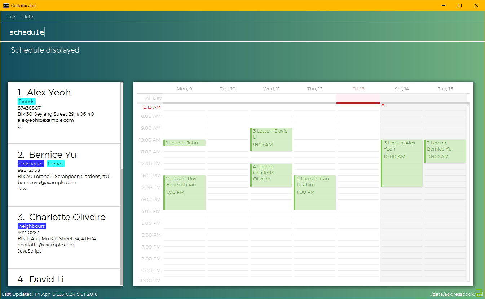

By: Team W09-B3 Since: Mar 2018 Licence: MIT
- 1. Introduction
- 2. Quick Start
- 3. Features
- 3.1. Viewing help :
help - 3.2. Adding a student:
add - 3.3. Listing all students :
list - 3.4. Editing a student :
edit - 3.5. Locating students by name:
find - 3.6. Locating students by tags:
findTag - 3.7. Adding a student to favourites :
fav - 3.8. Remove a student from favourites :
unfav - 3.9. Show the dashboard of a student:
showDB - 3.10. Add a milestone to a student’s dashboard:
addMS - 3.11. Delete a milestone from a student’s dashboard:
deleteMS - 3.12. Add a task to a milestone:
addTask - 3.13. Mark a task as completed:
checkTask - 3.14. Deleting a student :
delete - 3.15. Selecting a student :
select - 3.16. Viewing your schedule :
schedule - 3.17. Adding a lesson to your schedule:
addLesson - 3.18. Deleting a lesson in your schedule:
deleteLesson - 3.19. Listing entered commands :
history - 3.20. Undoing previous command :
undo - 3.21. Redoing the previously undone command :
redo - 3.22. Clearing all entries :
clear - 3.23. Exiting the program :
exit - 3.24. Saving the data
- 3.25. Encrypting data files
[coming in v2.0] - 3.26. Full information page for each student :
moreInfo[coming in v2.0] - 3.27. Track student’s homework in the dashboard
[coming in v2.0]
- 3.1. Viewing help :
- 4. FAQ
- 5. Command Summary
1. Introduction
Codeducator is a desktop address book application for private programming language tutors who prefer to use a desktop app for managing the contacts of students. You can also use Codeducator to track the progress of your students, manage your tutoring schedule and other important information about your students. More importantly, Codeducator is optimized for those who prefer to work with a Command Line Interface (CLI) while still having the benefits of a Graphical User Interface (GUI). If you can type fast, Codeducator can get your contact management tasks done faster than traditional GUI apps. Interested? Jump to the Section 2, “Quick Start” to get started. Enjoy!
2. Quick Start
-
Ensure you have Java version
1.8.0_60or later installed in your Computer.Having any Java 8 version is not enough.
This app will not work with earlier versions of Java 8. -
Download the latest
addressbook.jarhere. -
Copy the file to the folder you want to use as the home folder for your Address Book.
-
Double-click the file to start the app. The GUI should appear in a few seconds.
 -
Type the command in the command box and press Enter to execute it.
e.g. typinghelpand pressing Enter will open the help window. -
Some example commands you can try:
-
list: lists all contacts -
addn/John Doe p/98765432 e/johnd@example.com a/John street, block 123, #01-01: adds a contact namedJohn Doeto the Address Book. -
delete3: deletes the 3rd contact shown in the current list -
exit: exits the app
-
-
Refer to Section 3, “Features” for details of each command.
3. Features
Command Format
-
Words in
UPPER_CASEare the parameters to be supplied by the user e.g. inadd n/NAME,NAMEis a parameter which can be used asadd n/John Doe. -
Items in square brackets are optional e.g
n/NAME [t/TAG]can be used asn/John Doe t/friendor asn/John Doe. -
Items with
… after them can be used multiple times including zero times e.g.[t/TAG]…can be used ast/friend,t/friend t/familyetc. -
Parameters can be in any order e.g. if the command specifies
n/NAME p/PHONE_NUMBER,p/PHONE_NUMBER n/NAMEis also acceptable.
3.1. Viewing help : help
Format: help
3.2. Adding a student: add
Adds a student to the address book
Format: add n/NAME p/PHONE_NUMBER e/EMAIL a/ADDRESS s/SUBJECT [t/TAG]…
| A student can have any number of tags (including 0) |
Examples:
-
add n/John Doe p/98765432 e/johnd@example.com a/John street, block 123, #01-01 s/English -
add n/Betsy Crowe t/friend e/betsycrowe@example.com a/Newgate Prison p/1234567 s/CompSci t/criminal t/NoLife
3.3. Listing all students : list
Shows a list of all students in the address book.
Format: list [-f]
| Use the -f flag to view all student in favourites |
Examples:
-
list -f
List only all student that you added to favourites -
list
List all students
3.4. Editing a student : edit
Edits an existing student in the address book.
Format: edit INDEX [n/NAME] [p/PHONE] [e/EMAIL] [a/ADDRESS] [s/SUBJECT] [t/TAG]…
Examples:
-
edit 1 p/91234567 e/johndoe@example.com
Edits the phone number and email address of the 1st student to be91234567andjohndoe@example.comrespectively. -
edit 2 n/Betsy Crower t/
Edits the name of the 2nd student to beBetsy Crowerand clears all existing tags.
3.5. Locating students by name: find
Finds students whose names contain any of the given keywords.
Format: find KEYWORD [MORE_KEYWORDS]
Examples:
-
find John
ReturnsjohnandJohn Doe -
find Betsy Tim John
Returns any student having namesBetsy,Tim, orJohn
3.6. Locating students by tags: findTag
Finds students whose labels contain any of the given keywords.
Format: findTag KEYWORD [MORE_KEYWORDS]
Examples:
When your AddressBook has a student named John Doe, which you have tagged t/friends and t/owesMoney, and a student named Betsy which you have tagged t/owesMoney and t/poor,
* findTag friends
Returns John Doe
* findTag friends owesMoney
Returns any student having tags friends, owesMoney, i.e. John Doe and Betsy
3.7. Adding a student to favourites : fav
Adds an existing student in the address book to your favourites.
Format: fav INDEX
Examples:
-
list
fav 2
Adds the 2nd student in the address book to favourites. -
find Betsey
fav 1
Adds the 1st student in the results of thefindcommand to favourites
3.8. Remove a student from favourites : unfav
Removes an existing student in the address book from your favourites.
Format: unfav INDEX
Examples:
-
list
unfav 2
Removes the 2nd student in the address book from favourites. -
find Betsey
unfav 1
Removes the 1st student in the results of thefindcommand from favourites
3.9. Show the dashboard of a student: showDB
Shows the dashboard of an existing student in the address book.
Format: showDB INDEX
| A dashboard provides at-a-glance view of your student’s progress. Each dashboard contains a list of milestones and tasks that you can set for your student. |
Examples:
-
list
showDB 2
Shows the dashboard of the 2nd student in the address book. -
list -f
showDB 1
Shows the dashboard of the 1st student the favourites list.
3.10. Add a milestone to a student’s dashboard: addMS
Adds a milestone to the dashboard of an existing student in the address book.
Format: addMS i/STUDENT_INDEX d/DUE_DATE o/DESCRIPTION
| A milestone signifies a major step in the learning progress of your student. Hence, you may want to create the milestones carefully such that completing every milestone signifies the completion of your tutoring objective with your student. |
Examples:
-
list
addMS i/1 d/18/08/2018 23:59 o/Learn Arrays
Adds a milestone to the dashboard of the 1st student in the address book. The milestone is due on 18/08/2018 23:59 and the objective is "Learn Arrays". -
find Betsey
addMS i/2 d/03/04/2019 10:30 o/Learn Recursion
Adds a milestone to the dashboard of the 2nd person in the results of thefindcommand. The milestone is due on 03/04/2019 10:30 and the objective is "Learn Recursion".
3.11. Delete a milestone from a student’s dashboard: deleteMS
Deletes a milestone from the dashboard of an existing student in the address book.
Format: deleteMS i/STUDENT_INDEX m/MILESTONE_INDEX
Examples:
-
list
deleteMS i/1 m/2
Deletes the 2nd milestone from the dashboard of the 1st student in the address book. -
find Betsey
deleteMS i/3 m/4
Deletes the 4th milestone from the dashboard of the 3rd student in the results of thefindcommand.
3.12. Add a task to a milestone: addTask
Adds a task to an existing milestone in a dashboard.
Format: addTask i/STUDENT_INDEX m/MILESTONE_INDEX n/NAME o/DESCRIPTION
| A task signifies a piece of work to be done to meet the milestone’s objective. Hence, a milestone’s objective should be met when all its tasks are completed. |
Examples:
-
list
addTask i/1 m/3 n/Learn Array Syntax o/Student to refer to the textbook
Adds a task to the 3rd milestone in the dashboard of the 1st student in the address book. The name of the task is "Learn Array Syntax" and the description is "Student to refer to the textbook". -
find Betsey
addTask i/2 m/1 n/Practice Recursion Exercises o/Refer to problem set
Adds a task to the 1st milestone in the dashboard of the 2nd student in the results of thefindcommand. The name of the task is "Practice Recursion Exercises" and the description is "Refer to problem set".
3.13. Mark a task as completed: checkTask
Marks a task in an existing milestone as completed.
Format: checkTask i/STUDENT_INDEX m/MILESTONE_INDEX tk/TASK_INDEX
| Marking a task as completed updates the progress of the milestone. |
Examples:
-
list
checkTask i/1 m/2 tk/3
Marks the 3rd task in the 2nd milestone as completed. The milestone is in the dashboard of the 1st student in the address book. -
find Betsey
checkTask i/2 m/3 tk/4
Marks the 4th task in the 3rd milestone as completed. The milestone is in the dashboard of the 2nd student in the results of thefindcommand.
3.14. Deleting a student : delete
Deletes the specified student from the address book.
Format: delete INDEX
Examples:
-
list
delete 2
Deletes the 2nd student in the address book. -
find Betsy
delete 1
Deletes the 1st student in the results of thefindcommand.
3.15. Selecting a student : select
Selects the student identified by the index number used in the last student listing, and display their address on google maps.
Format: select INDEX
Examples:
-
list
select 2
Selects the 2nd student in the address book. -
find Betsy
select 1
Selects the 1st student in the results of thefindcommand.
3.16. Viewing your schedule : schedule
Shows your weekly schedule as a list of lessons.
Format: schedule
| Currently displayed in the terminal. UI will be added in coming weeks. |
3.17. Adding a lesson to your schedule: addLesson
Adds a lesson to your schedule for a student identified by the index number in the last student listing.
Format: addLesson INDEX [d/DAY] [st/START_TIME] [et/END_TIME]
Examples:
-
list -
addLesson 1 d/mon st/10:00 et/10:30
Adds a lesson for the 1st student of thelistcommand. Lesson will be held on the day ofmonand starting time will be10:00and ending time will be10:30. -
find Betsy -
addLesson 1 d/tue st/12:00 et/13:30
Adds a lesson for the 1st student of thefind Betsycommand. Lesson will be held on the day oftueand starting time will be12:00and ending time will be13:30.
3.18. Deleting a lesson in your schedule: deleteLesson
Deletes an existing lesson in your schedule identified by the index number in the last schedule listing. of day, i.e. mon for Monday, fri for Friday.
Format: deleteLesson INDEX
Examples:
-
schedule -
deleteLesson 2
Deletes the 2nd lesson listing in the schedule
3.19. Listing entered commands : history
Lists all the commands that you have entered in reverse chronological order.
Format: history
|
Pressing the ↑ and ↓ arrows will display the previous and next input respectively in the command box. |
3.20. Undoing previous command : undo
Restores the address book to the state before the previous undoable command was executed.
Format: undo
|
Undoable commands: those commands that modify the address book’s content ( |
Examples:
-
delete 1
list
undo(reverses thedelete 1command) -
select 1
list
undo
Theundocommand fails as there are no undoable commands executed previously. -
delete 1
clear
undo(reverses theclearcommand)
undo(reverses thedelete 1command)
3.21. Redoing the previously undone command : redo
Reverses the most recent undo command.
Format: redo
Examples:
-
delete 1
undo(reverses thedelete 1command)
redo(reapplies thedelete 1command) -
delete 1
redo
Theredocommand fails as there are noundocommands executed previously. -
delete 1
clear
undo(reverses theclearcommand)
undo(reverses thedelete 1command)
redo(reapplies thedelete 1command)
redo(reapplies theclearcommand)
3.22. Clearing all entries : clear
Clears all entries from the address book.
Format: clear
3.23. Exiting the program : exit
Exits the program.
Format: exit
3.24. Saving the data
Address book data are saved in the hard disk automatically after any command that changes the data.
There is no need to save manually.
3.25. Encrypting data files [coming in v2.0]
{explain how the user can enable/disable data encryption}
3.26. Full information page for each student : moreInfo [coming in v2.0]
_{Explain command to obtain full information page for each student}
4. FAQ
Q: How do I transfer my data to another Computer?
A: Install the app in the other computer and overwrite the empty data file it creates with the file that contains the data of your previous Address Book folder.
5. Command Summary
-
Add
add n/NAME p/PHONE_NUMBER e/EMAIL a/ADDRESS s/SUBJECT [t/TAG]…
e.g.add n/James Ho p/22224444 e/jamesho@example.com a/123, Clementi Rd, 1234665 s/Math t/friend t/1stYear -
Clear :
clear -
Delete :
delete INDEX
e.g.delete 3 -
Edit :
edit INDEX [n/NAME] [p/PHONE_NUMBER] [e/EMAIL] [a/ADDRESS] [s/SUBJECT] [t/TAG]…
e.g.edit 2 n/James Lee e/jameslee@example.com -
Find :
find KEYWORD [MORE_KEYWORDS]
e.g.find James Jake -
List :
list -
Help :
help -
Select :
select INDEX
e.g.select 2 -
History :
history -
Undo :
undo -
Redo :
redo